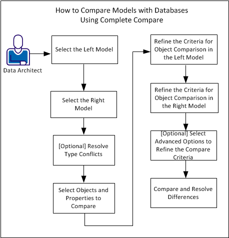

During the life-cycle of a model, as a Data Architect you create several versions of the model. After you create a database from the model, you may change the database, but not implement the changes in the model. Similarly, you may update the model over time but not update the same changes in the database. This results in the model and the database not being up-to-date. At some point, you may want to compare models or databases to know the differences in the objects and properties. The Complete Compare feature lets you compare two models and resolve differences between the two models.
This tutorial describes how Data Architects can compare a model with a database using the Complete Compare feature.
When you compare a model with a database or compare two databases, you reverse engineer the database to create a model and then compare the model. This means, you compare two models all the time.
Use the Complete Compare feature to compare the following items:
Using Complete Compare, you compare the objects and properties at the model level (Logical, Physical, or Logical/Physical) or database level. You can compare a Logical Only model with another Logical Only model. However, you can compare a Physical Only model with another Physical Only model or a Logical/Physical model.
After you finish comparing, you view and resolve differences. When you begin to resolve differences, the models that are currently open are changed in real time. You can undo, redo, or reverse compare actions. If you are comparing at the physical level or you included a database or script file in the compare, you can generate ALTER scripts for the models.
You can select the class of objects you want to compare. For example, tables, columns, indexes, and relationships. You can also compare all objects or only a few selected objects. Comparing selected objects helps you view differences at specific object levels. For example, you can view differences only for selected tables, columns, indexes, or relationships.
Consider the following circumstances when you want to compare a model with a database:
The following diagram illustrates how to to compare data models with databases. We considered the left model selection as the data model and the right model selection as the database.

Use the following steps: